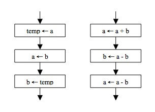
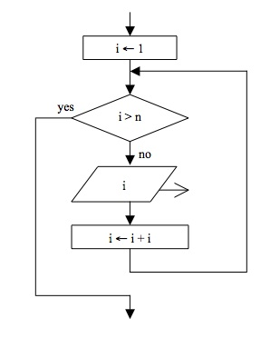

- Trace cada uno de los siguientes diagramas de flujo para los valores iniciales de a=42 y b=18.
¿Qué cálculo útil está siendo realizado por cada uno de los diagramas de flujo?

- Dibuje un diagrama de flujo para el siguiente algoritmo. Trace el algoritmo para n=48. ¿Cuántas iteraciones del bucle son computadas?
Input a positive integer n
While n!=1 do
| If n is even, divide n by 2.
|
| Otherwise, multiply n by 3 and then add 1.
|
| Output n
|
- Escriba el algoritmo representado por diagrama de flujo como un programa
en Python. ¿Cuál es la salida del algoritmo si n=1000? Describa que está computando
el algoritmo para cuaquier valor entero n.

- Escriba una función que reciba un número y devuelva una lista de sus digitos: unidades, decenas, centenas, etc.
- Escriba una función con un argumento, compute el factorial y lo imprima en pantalla.
- Escriba una función que acepte un valor decimal
y dos valores ISO 4217 para codificar monedas
y compute el valor de cambio dada una tasa de conversión.
Si alguno de los códigos de moneda no se reconoce el programa
debe imprimir une error.
Si se ejecuta sin parámetros, la función debe devolver un mensaje
listando instrucciones para ejecutar la función con el listado
de codigos de monedas válidos para los que se tiene conversión.
- Escriba una función que devuelva el reverso de una lista.
- Escriba una función compruebe si un valor esta en una lista, y
devuelva las ocurrencias de dicho valor.
- Escriba una función que compruebe si una cadena de
caracteres es un palíndromo.
- Escriba una función que combine dos listas alternando los elementos:
ej. [a,b,c], [1,2,3] –> [a,1,b,2,c,3].
- Escriba una función que rote una lista usando como pivote el elemento
k. Por ejemplo [1,2,3,4,5,6] rotado en 2 da como resultado [3,4,5,6,1,2].
Intente resolver el problema sin crear una copia de la lista.
- Escriba un programa corto en Python con el nombre triangle.py que implemente
el siguiente algoritmo:
Set i equal to 11
Set j equal to 1
While j <= 10 do
| Do the following j times
| Output i but keep the cursor on the same line |
| Add 1 to i
|
|
| Move the cursor to the next line |
| Add 1 to j
|
El resultado esperado debe ser el siguiente:
11
12 13
14 15 16
17 18 19 20
21 22 23 24 25
26 27 28 29 30 31
32 33 34 35 36 37 38
39 40 41 42 43 44 45 46
47 48 49 50 51 52 53 54 55
56 57 58 59 60 61 62 63 64 65
- Escriba un programa corto en Python que devuelva el siguiente resultado:
1
2 4
3 6 9
4 8 12 16
5 10 15 20 25
6 12 18 24 30 36
7 14 21 28 35 42 49
- Escriba una función que acepte como entrada una lista de strings
y las imprima línea por línea en un marco rectancular.
Por ejemplo la lista: ["Hello", "World", "in", "a", "frame"] se imprimiría como:
*********
* Hello *
* World *
* in *
* a *
* frame *
*********
- Configurar una matriz para contener los siguientes strings:
Beyonce (f)
David Bowie (m)
Elvis Costello (m)
Madonna (f)
Elton John (m)
Charles Aznavour (m)
Escriba un programa para recorrerla y contar cuántos son vocalistas masculinos y cuántos son mujeres.
Muestre la respuesta en pantalla.
- Implemente los siguientes algoritmos de búsqueda: Selection sort, Insertion sort, Merge sort, Quick sort, Stooge Sort.
Vea la Wikipedia para obtener una descripción.
- Implemente el algoritmo: binary search.
- La jerigonza, jerigonzo o jerigoncio es una variante lúdica del habla.
En jerigonza “escondido” se dice epescopondipidopo.
Además del entretenimiento,
también puede usarse como un modo de codificar el mensaje de forma que otras
personas cercanas a los hablantes no acostumbrados a esta forma de hablar no consigan entender lo que los
hablantes dicen.
Realice un programa que codifique, y decodifique, mensajes escritos en este dialecto.
Para ello, se sabe que después de cada vocal se agrega el sonido “p”
y se repite la vocal.
“Carlos” genera “Caparlopos”.
Por simplicidad, puede asumir que el usuario ingresará el texto sin tildes.
Ejemplo:
- Hopolapa, ¿copomopo epestapas? (Hola, ¿como estas?)
- Yopo epestopoypi bipiepen, ¿ypi tupu? (Yo estoy bien, ¿y tu?)
- Tapambiepen, grapacipiapas. (Tambien, gracias.)
- Epestapamopos hapablapandopo epen jeperipigoponzapa (Estamos hablando en jerigonza)
- Epesopo yapa lopo sapabipiapa (Eso ya lo sabia)
Criterios de solución:
Debemos revisar cada letra: si es una vocal se repite como dice el enunciado, y cualquier
otro caracter se deja igual, salvo la “y” que se considerará como vocal, siempre y cuando lo que siga no
sea una vocal.
- Escriba un programa que descifre el siguiente texto:
C13R70 D14 D3 V3R4N0 3574B4 3N L4 PL4Y4 0853RV4ND0 4 D05 CH1C45 8R1NC4ND0 3N 14 4R3N4, 357484N 7R484J4ND0 MUCH0 C0N57RUY3ND0 UN C4571LL0 D3 4R3N4 C0N 70RR35, P454D1Z05 0CUL705 Y PU3N735. CU4ND0 357484N 4C484ND0 V1N0 UN4 0L4 D357RUY3ND0 70D0 R3DUC13ND0 3L C4571LL0 4 UN M0N70N D3 4R3N4 Y 35PUM4.
P3N53 9U3 D35PU35 DE 74N70 35FU3RZ0 L45 CH1C45 C0M3NZ4R14N 4 L10R4R, P3R0 3N V3Z D3 350, C0RR13R0N P0R L4 P14Y4 R13ND0 Y JU64ND0 Y C0M3NZ4R0N 4 C0N57RU1R 07R0 NU3VO C4571LL0.
C0MPR3ND1 9U3 H4814 4PR3ND1D0 UN4 6R4N L3CC10N; 64574M05 MUCH0 713MP0 D3 NU357R4 V1D4 C0N57RUY3ND0 4L6UN4 C054 P3R0 CU4ND0 M45 74RD3 UN4 0L4 LL364 4 D357RU1R 70D0, S010 P3RM4N3C3 L4 4M1574D, 3L 4M0R Y 3L C4R1Ñ0, Y L45 M4N05 D3 49U3LL05 9U3 50N C4P4C35 D3 H4C3RN05 50NRR31R.
- Compute la proyección de estudiantes activos (E) en cada periodo (t),
utilizando el siguiente modelo:
E(t)=E(t-1)*TR+I, donde
- TR: tasa de retención es 0.6.
- I: ingreso anual es 15.
Con la siguiente condición inicial:
Calcule los docentes requeridos D como D=E(t)/2.